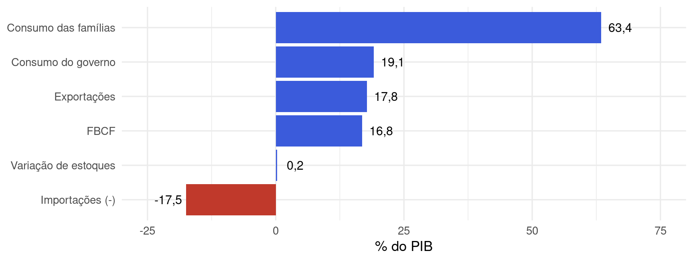
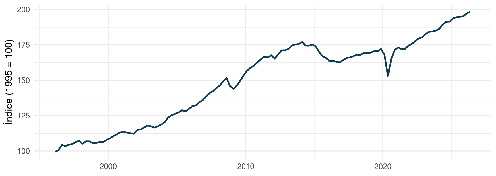
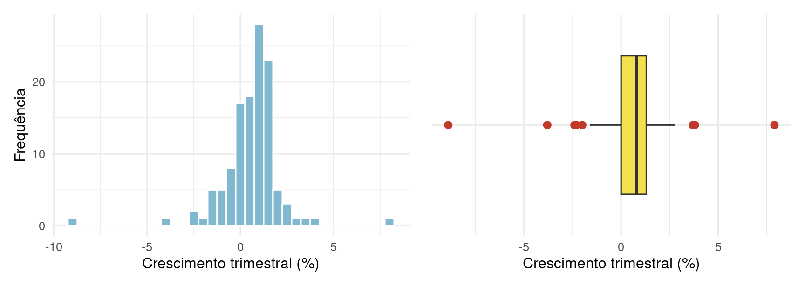
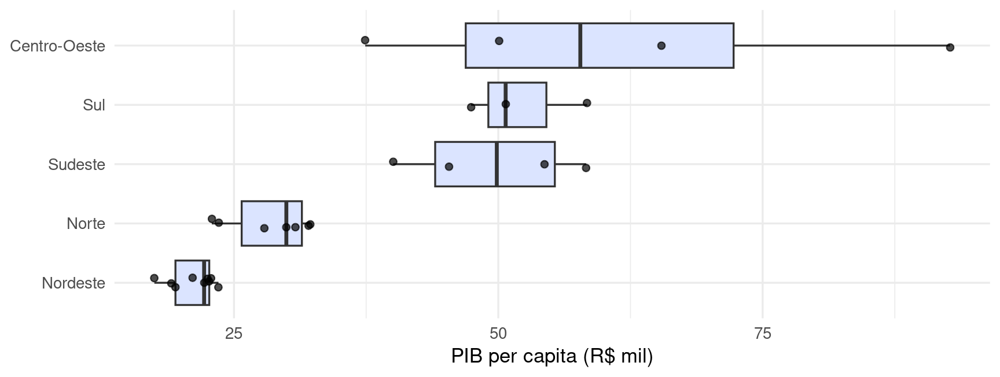
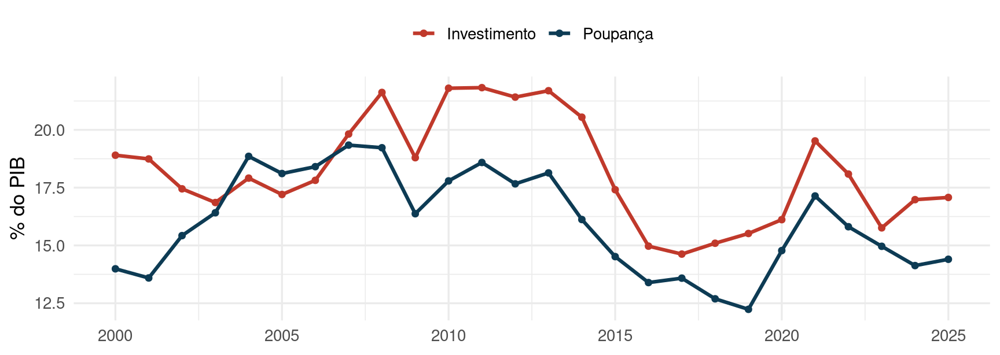
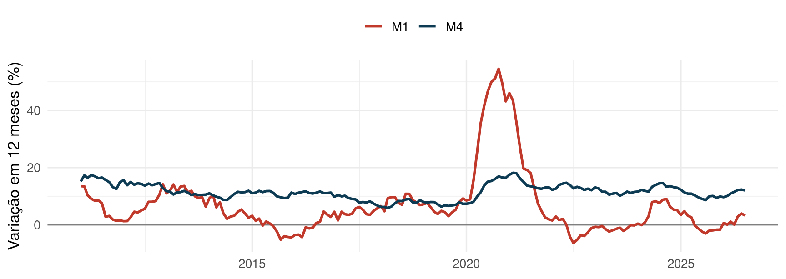
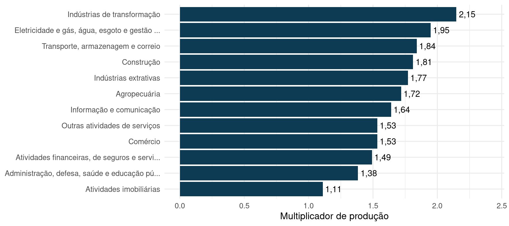

1.8 Aplicação: contas nacionais, regionais e monetárias
As ferramentas deste capítulo (frequências relativas, taxas de variação, medidas de posição e de
dispersão, gráficos e correlação) são exatamente as que um economista usa para ler as contas
nacionais. O Sistema de Contas Nacionais (SCN), produzido pelo IBGE, registra de forma integrada a
produção, a renda, o consumo, o investimento e o financiamento da economia; o Banco Central publica as
estatísticas monetárias. Esta seção percorre seis blocos desse sistema com dados oficiais extraídos
em 17/09/2026 (Banco Central do Brasil, 2026; Instituto Brasileiro de Geografia e Estatística (IBGE), 2018, 2025b, 2025a, 2026a). O
script Livro/data/baixar_contas.R refaz o download.
| Bloco | Pergunta que responde | Fonte |
|---|---|---|
| Agregados macroeconômicos | quanto a economia produz, gasta e remunera? | IBGE, SCN anual e trimestral |
| Contas trimestrais | a economia está crescendo agora? | IBGE, Contas Nacionais Trimestrais |
| Contas regionais | como a produção se distribui entre os estados? | IBGE, Contas Regionais |
| Contas Econômicas Integradas | de onde vem a renda e como ela financia o investimento? | IBGE, contas econômicas |
| Contas monetárias e financeiras | quanta moeda e quanta liquidez há na economia? | Banco Central |
| Insumo-produto | como os setores dependem uns dos outros? | IBGE, Matriz de Insumo-Produto |
1.8.1 Agregados macroeconômicos: as três óticas do PIB
O Produto Interno Bruto (PIB) é o valor dos bens e serviços finais produzidos no país em um período. Ele pode ser medido de três maneiras, que chegam ao mesmo número:
- Ótica da produção: valor da produção menos o consumo intermediário (o que foi usado como insumo), somado aos impostos líquidos sobre produtos: \(PIB = VBP - CI + \text{impostos líquidos}\). A diferença \(VBP - CI\) é o valor adicionado.
- Ótica da despesa: consumo das famílias (\(C\)), consumo do governo (\(G\)), formação bruta de capital fixo (\(FBCF\), o investimento), variação de estoques (\(\Delta E\)) e exportações (\(X\)) menos importações (\(M\)): \(PIB = C + G + FBCF + \Delta E + X - M\).
- Ótica da renda: remuneração dos empregados, rendimento misto (autônomos), excedente operacional bruto (lucros e aluguéis) e impostos líquidos sobre a produção e a importação.
cn_2021 <- filter(cn_ot, ano == 2021, !is.na(valor_milhoes)) |>
mutate(bilhoes = valor_milhoes / 1000,
pct_pib = 100 * valor_milhoes / 9012142) # PIB de 2021: R$ 9.012.142 milhões
tabela(select(cn_2021, Ótica = otica, Item = item, `R$ bilhões` = bilhoes, `% do PIB` = pct_pib),
digits = 1, caption = "PIB de 2021 sob as três óticas, valores correntes. Fonte: IBGE, SCN, tabela sinótica 5.")| Ótica | Item | R$ bilhões | % do PIB |
|---|---|---|---|
| produção | Total | 9.012,1 | 100,0 |
| produção | Produção | 16.581,9 | 184,0 |
| produção | Impostos sobre produtos | 1.302,5 | 14,5 |
| produção | Subsídios aos produtos (-) | -4,3 | 0,0 |
| produção | Consumo intermediário (-) | -8.867,9 | -98,4 |
| despesa | Total | 9.012,1 | 100,0 |
| despesa | Despesa de consumo final | 7.202,1 | 79,9 |
| despesa | Despesa de consumo das famílias | 5.415,5 | 60,1 |
| despesa | Despesa de consumo das Instituições sem fins de lucro a serviço das famílias | 115,0 | 1,3 |
| despesa | Despesa de consumo do governo | 1.671,5 | 18,5 |
| despesa | Formação bruta de capital | 1.759,3 | 19,5 |
| despesa | Formação bruta de capital fixo | 1.614,8 | 17,9 |
| despesa | Variação de estoque | 144,6 | 1,6 |
| despesa | Exportação de bens e serviços | 1.722,2 | 19,1 |
| despesa | Importação de bens e serviços (-) | -1.671,5 | -18,5 |
| renda | Total | 9.012,1 | 100,0 |
| renda | Remuneração dos empregados | 3.534,6 | 39,2 |
| renda | Salários | 2.795,0 | 31,0 |
| renda | Contribuições sociais efetivas | 639,0 | 7,1 |
| renda | Contribuições sociais imputadas | 100,6 | 1,1 |
| renda | Rendimento misto bruto | 701,5 | 7,8 |
| renda | Excedente operacional bruto | 3.376,9 | 37,5 |
| renda | Impostos sobre a produção e importação | 1.413,4 | 15,7 |
| renda | Subsídios a produção e importação (-) | -14,3 | -0,2 |
As três somas dão R$ 9,01 trilhões em 2021, o último ano em que as três óticas estão publicadas. (A ótica da renda não sai no mesmo ritmo das outras duas; os subitens em recuo, como “Salários”, já estão dentro do item anterior e não devem ser somados de novo.)
A composição da despesa em 2025. Somando os quatro trimestres de 2025 das contas trimestrais, cada componente vira uma frequência relativa do PIB:

Figura 1.42: Componentes do PIB de 2025 pela ótica da despesa, em % do PIB (valores correntes, soma dos quatro trimestres). As importações entram com sinal negativo. Fonte: IBGE, Contas Nacionais Trimestrais, tabela 1846.
O PIB de 2025 foi de R$ 12,74 trilhões. O consumo das famílias responde por 63,4% do PIB e a taxa de investimento (\(FBCF/PIB\)) foi de 16,8%. Pela ótica da produção, os serviços geraram 69,5% do valor adicionado, a indústria 23,4% e a agropecuária 7,1%.
Leitura econômica. Frequências relativas são a linguagem natural das contas nacionais: “o investimento foi 16,8% do PIB” compara economias de tamanhos diferentes e anos com preços diferentes, algo que os valores em reais não permitem. Mas cuidado com o gráfico de pizza: as importações entram com sinal negativo e a soma das “fatias” positivas passa de 100%. Aqui, barras são a escolha correta (Seção 1.3).
1.8.2 Contas trimestrais: quatro taxas para a mesma pergunta
As Contas Nacionais Trimestrais publicam, a cada trimestre, quatro taxas de variação do volume do PIB. Todas usam a fórmula de taxa de variação da Seção 1.3; o que muda é com o que se compara:
cn_ult <- max(cn_tx$trimestre)
cn_tx_ult <- cn_tx |> filter(trimestre == cn_ult, componente == "PIB a preços de mercado") |>
transmute(Taxa = taxa, `%` = valor_pct)
tabela(cn_tx_ult, digits = 1,
caption = paste0("Taxas de variação do PIB no ", cn_tri(cn_ult), ". Fonte: IBGE, tabela 5932."))| Taxa | % |
|---|---|
| Taxa trimestral (em relação ao mesmo período do ano anterior) | 2,0 |
| Taxa acumulada em quatro trimestres (em relação ao mesmo período do ano anterior) | 1,9 |
| Taxa acumulada ao longo do ano (em relação ao mesmo período do ano anterior) | 1,9 |
| Taxa trimestre contra trimestre imediatamente anterior | 0,5 |
| Taxa | Compara com | Responde a |
|---|---|---|
| trimestre contra trimestre anterior (com ajuste sazonal) | o trimestre imediatamente anterior | a economia acelerou agora? |
| trimestral | o mesmo trimestre do ano anterior | como está em relação a um ano atrás, sem precisar de ajuste sazonal? |
| acumulada no ano | o mesmo período do ano anterior | como vai o ano até aqui? |
| acumulada em quatro trimestres | os quatro trimestres anteriores | qual o crescimento “anual” mais recente? |
A primeira taxa exige ajuste sazonal: o PIB do 4º trimestre é, todo ano, diferente do 1º por razões de calendário (safra, festas, férias), e comparar trimestres vizinhos sem retirar esse padrão confundiria sazonalidade com crescimento.

Figura 1.43: Índice de volume do PIB com ajuste sazonal (média de 1995 = 100). Quedas marcadas em 2008-2009, 2015-2016 e 2020. Fonte: IBGE, tabela 1621.
A distribuição do crescimento trimestral. Tratando as taxas “trimestre contra trimestre anterior” de 1996 a 2026 como um conjunto de dados, usamos as medidas das seções anteriores:

Figura 1.44: Taxa de crescimento do PIB contra o trimestre anterior, com ajuste sazonal, 1996 a 2026. Histograma e boxplot: a pandemia produziu os dois valores mais extremos; os demais atípicos são as quedas de 1998, 2008, 2015 e do 1º trimestre de 2020 e as altas de 1996 e do 4º trimestre de 2020. Fonte: IBGE, tabela 5932.
cn_qq_s <- cn_qq$valor_pct
c(n = length(cn_qq_s), media = mean(cn_qq_s), mediana = median(cn_qq_s), dp = sd(cn_qq_s),
Q1 = unname(quantile(cn_qq_s, 0.25, type = 2)), Q3 = unname(quantile(cn_qq_s, 0.75, type = 2)),
prop_negativos = mean(cn_qq_s < 0))## n media mediana dp Q1
## 121.0000000 0.5834711 0.8000000 1.5830533 0.0000000
## Q3 prop_negativos
## 1.3000000 0.2231405## # A tibble: 2 × 2
## trimestre valor_pct
## <chr> <dbl>
## 1 202002 -8.9
## 2 202003 7.9Em 121 trimestres, a mediana do crescimento foi 0,8% e a média 0,58%; a média fica abaixo da mediana, puxada pela queda de 8,9% no 2º trimestre de 2020 (assimetria à esquerda). O PIB caiu em 22,3% dos trimestres. Esses números reaparecem no Capítulo 3 (quantos trimestres de queda esperar em um ano) e no Capítulo 4 (modelo normal para o crescimento).
Discussão. Em 2025, as taxas trimestre contra trimestre anterior foram 1,3; 0,4; 0,1; 0,2 (%). Compondo as quatro, \(\prod (1 + r_t) - 1 \approx 2{,}0\%\). Esse número é o crescimento do PIB em 2025? (Dica: ele compara o 4º trimestre de 2025 com o 4º de 2024; o crescimento do ano compara a soma dos quatro trimestres de cada ano.) Por que o boletim do IBGE destaca taxas diferentes conforme o público?
1.8.3 Contas regionais: desigualdade entre os estados
As Contas Regionais repartem o PIB entre as 27 unidades da federação. As participações formam uma distribuição de frequências relativas, e a frequência acumulada mostra a concentração:
cn_uf23 <- cn_uf |> filter(ano == 2023) |> arrange(desc(pib)) |>
mutate(participacao = 100 * pib / sum(pib), acumulada = cumsum(participacao))
tabela(head(select(cn_uf23, UF = uf, Região = regiao, `Participação (%)` = participacao,
`Acumulada (%)` = acumulada), 8), digits = 1,
caption = "Os oito maiores PIBs estaduais em 2023. Fonte: IBGE, Contas Regionais, tabela 5938.")| UF | Região | Participação (%) | Acumulada (%) |
|---|---|---|---|
| São Paulo | Sudeste | 31,5 | 31,5 |
| Rio de Janeiro | Sudeste | 10,7 | 42,2 |
| Minas Gerais | Sudeste | 8,9 | 51,1 |
| Paraná | Sul | 6,1 | 57,2 |
| Rio Grande do Sul | Sul | 5,9 | 63,1 |
| Santa Catarina | Sul | 4,7 | 67,8 |
| Bahia | Nordeste | 3,9 | 71,8 |
| Distrito Federal | Centro-Oeste | 3,3 | 75,1 |
Três estados (São Paulo, Rio de Janeiro, Minas Gerais) geram 51,1% do PIB do país.
PIB per capita e a média ponderada. Com o PIB e a população estimada de 2021 (último ano com as duas informações publicadas lado a lado), calculamos o PIB per capita de cada estado:
cn_uf21 <- cn_uf |> filter(ano == 2021) |> mutate(pc = 1000 * pib / populacao)
c(brasil = 1000 * sum(cn_uf21$pib) / sum(cn_uf21$populacao),
media_simples_ufs = mean(cn_uf21$pc), mediana_ufs = median(cn_uf21$pc),
cv_ufs = sd(cn_uf21$pc) / mean(cn_uf21$pc), maior_sobre_menor = max(cn_uf21$pc) / min(cn_uf21$pc))## brasil media_simples_ufs mediana_ufs cv_ufs
## 42247.5236565 36682.9179220 30803.5578496 0.4943261
## maior_sobre_menor
## 5.3075244O PIB per capita do Brasil (R$ 42.248) não é a média simples dos 27 estados (R$ 36.683): é uma média ponderada pela população, e cinco dos seis estados mais populosos (São Paulo, Minas Gerais, Rio de Janeiro, Paraná e Rio Grande do Sul) têm PIB per capita acima da mediana dos estados. O maior valor (Distrito Federal) é 5,3 vezes o menor (Maranhão).

Figura 1.45: PIB per capita dos estados em 2021 (R$ mil), por grande região. Fonte: IBGE, Contas Regionais (tabela 5938) e Estimativas de População (tabela 6579).
Leitura econômica. O coeficiente de variação do PIB per capita entre os estados é de 49%: a dispersão regional é grande. Mas o boxplot do Centro-Oeste mostra por que olhar só para a média da região engana: o Distrito Federal (renda da administração pública) e Mato Grosso (agronegócio) têm PIB per capita alto por razões muito diferentes, e um valor atípico muda a média regional.
1.8.4 Contas Econômicas Integradas: da produção ao financiamento
As Contas Econômicas Integradas (CEI) mostram, em sequência, como o valor produzido vira renda, como a renda se divide entre consumo e poupança e como a poupança financia (ou não) o investimento. Para a economia como um todo, as contas econômicas trimestrais do IBGE seguem exatamente essa sequência:
| Conta | R$ bilhões | % do PIB |
|---|---|---|
| Produto Interno Bruto | 12.738,6 | 100,0 |
| (+) Salários (líquidos recebidos do exterior) | 2,0 | 0,0 |
| (+) Rendas de propriedade (líquidas recebidas do exterior) | -416,5 | -3,3 |
| (=) Renda nacional bruta | 12.324,1 | 96,7 |
| (+) Outras transferências correntes (líquidas recebidas do exterior) | 29,2 | 0,2 |
| (=) Renda nacional disponível bruta | 12.353,3 | 97,0 |
| (-) Despesa de consumo final | 10.518,7 | 82,6 |
| (=) Poupança bruta | 1.834,5 | 14,4 |
| (-) Formação bruta de capital | 2.175,2 | 17,1 |
| (+) Cessão de ativos não financeiros não produzidos (aquisições líquidas) | 1,4 | 0,0 |
| (+) Transferências de capital (líquidas recebidas do exterior) | 0,1 | 0,0 |
| (=) Capacidade / necessidade líquida de financiamento | -339,1 | -2,7 |
Cada linha com “(=)” é uma identidade contábil: a poupança bruta é a renda disponível menos o consumo; a capacidade (+) ou necessidade (−) de financiamento é a poupança menos o investimento (mais ajustes pequenos). Em 2025, o Brasil investiu mais do que poupou, e a diferença, R$ 339 bilhões (2,7% do PIB), foi financiada pelo resto do mundo.

Figura 1.46: Taxas de poupança bruta e de investimento (formação bruta de capital) em % do PIB, 2000 a 2025. A distância entre as curvas é a necessidade de financiamento externo. Fonte: IBGE, tabela 2072.
Entre 2000 e 2025, a economia teve capacidade de financiamento (poupou mais do que investiu) em 3 anos (2004, 2005, 2006); o saldo mediano (capacidade ou necessidade de financiamento) no período foi de -2,4% do PIB.
Discussão. Nas CEI completas publicadas pelo IBGE, a mesma sequência de contas aparece por setor institucional: famílias, empresas não financeiras, instituições financeiras, governo e instituições sem fins de lucro, além do resto do mundo. Qual setor você espera que seja, tipicamente, credor (poupa mais do que investe) e qual seja devedor? Por que a soma das capacidades e necessidades de todos os setores residentes é igual, com sinal trocado, à do resto do mundo?
1.8.5 Contas monetárias e financeiras: moeda e liquidez
O Banco Central mede a quantidade de moeda por agregados monetários de liquidez decrescente. O M1 (meios de pagamento restritos) é o papel-moeda em poder do público mais os depósitos à vista; M2, M3 e M4 acrescentam, em camadas, ativos financeiros cada vez menos líquidos (depósitos de poupança e títulos emitidos por instituições financeiras; cotas de fundos e operações compromissadas; títulos públicos). A base monetária é a moeda emitida pelo próprio Banco Central.
cn_nomes <- c(base_monetaria = "Base monetária", papel_moeda_publico = "Papel-moeda em poder do público",
depositos_vista = "Depósitos à vista", M1 = "M1", M2 = "M2", M3 = "M3", M4 = "M4")
cn_mon_ult <- cn_mon |> filter(data == max(data)) |> select(serie, valor)
cn_m4 <- cn_mon_ult$valor[cn_mon_ult$serie == "M4"]
tabela(transmute(cn_mon_ult, Agregado = cn_nomes[serie], `R$ bilhões` = valor / 1e6,
`% do M4` = 100 * valor / cn_m4), digits = 1,
caption = paste0("Agregados monetários, saldo em ", format(max(cn_mon$data), "%m/%Y"),
" (valores do SGS em R$ mil, convertidos). Fonte: Banco Central do Brasil."))| Agregado | R$ bilhões | % do M4 |
|---|---|---|
| Base monetária | 432,6 | 2,7 |
| Papel-moeda em poder do público | 335,6 | 2,1 |
| Depósitos à vista | 309,7 | 2,0 |
| M1 | 645,3 | 4,1 |
| M2 | 7.737,7 | 48,9 |
| M3 | 14.059,8 | 88,9 |
| M4 | 15.820,8 | 100,0 |
Dois números resumem a tabela. O M1 é só 4,1% do M4: quase toda a “moeda ampla” rende juros. E a razão \(M1/\text{base monetária} = 1{,}49\) é o multiplicador monetário: cada real emitido pelo Banco Central sustenta cerca de 1,5 real de meios de pagamento, porque os bancos emprestam parte dos depósitos.

Figura 1.47: Taxa de variação em 12 meses do M1 e do M4 (saldos nominais). Fonte: Banco Central do Brasil, SGS, séries 27791 e 27815.
## # A tibble: 2 × 3
## serie media dp
## <chr> <dbl> <dbl>
## 1 M1 6.80 11.2
## 2 M4 11.5 2.74O M1 cresce de forma muito mais volátil que o M4 (compare os desvios padrão): em 2020, com o auxílio emergencial e a Selic no piso, o M1 chegou a crescer mais de 50% em 12 meses. As pessoas trocam depósitos à vista por aplicações que rendem juros quando a Selic sobe, e fazem o contrário quando ela cai; o M4, que inclui as duas formas, é bem mais estável.
1.8.6 Modelo de insumo-produto: como os setores dependem uns dos outros
Na Matriz de Insumo-Produto (MIP), cada célula \(z_{ij}\) registra quanto o setor \(j\) comprou do setor \(i\) como insumo. É uma tabela de dupla entrada entre setores vendedores (linhas) e compradores (colunas). Dividindo cada coluna pelo valor da produção do setor comprador, \(X_j\), obtemos os coeficientes técnicos
\[ a_{ij} = \frac{z_{ij}}{X_j}, \]
que dizem quantos reais de insumo do setor \(i\) são necessários para produzir R$ 1 no setor \(j\). É exatamente o perfil-coluna das tabelas de contingência (Seção 2.7), com a produção no denominador.
Um exemplo com dois setores, feito à mão. Agricultura (A) e indústria (I), valores em R$ bilhões:
| Compras de A | Compras de I | Demanda final | Produção total | |
|---|---|---|---|---|
| Vendas de A | 10 | 40 | 50 | 100 |
| Vendas de I | 20 | 60 | 120 | 200 |
Os coeficientes técnicos são \(a_{AA} = 10/100 = 0{,}10\), \(a_{IA} = 20/100 = 0{,}20\), \(a_{AI} = 40/200 = 0{,}20\) e \(a_{II} = 60/200 = 0{,}30\). Como produção = insumos + demanda final, \(X = AX + f\), e a produção necessária para atender uma demanda final \(f\) é
\[ X = (I - A)^{-1} f, \qquad (I - A)^{-1} = \frac{1}{0{,}59}\begin{pmatrix} 0{,}70 & 0{,}20 \\ 0{,}20 & 0{,}90 \end{pmatrix} \approx \begin{pmatrix} 1{,}186 & 0{,}339 \\ 0{,}339 & 1{,}525 \end{pmatrix}. \]
A matriz \((I - A)^{-1}\) é a matriz de Leontief (Leontief, 1936). A soma de cada coluna é o multiplicador de produção: R$ 1 a mais de demanda final por produtos industriais gera \(0{,}339 + 1{,}525 = 1{,}864\) reais de produção na economia (o próprio real, os insumos industriais e agrícolas comprados, os insumos desses insumos, e assim por diante).
A2 <- matrix(c(0.10, 0.20, 0.20, 0.30), nrow = 2, dimnames = list(c("A", "I"), c("A", "I")))
L2 <- solve(diag(2) - A2)
round(L2, 3)## A I
## A 1.186 0.339
## I 0.339 1.525## A I
## 1.525424 1.864407## [,1]
## A 100
## I 200A economia brasileira com 12 setores. Com os coeficientes técnicos da MIP de 2015 do IBGE:
cn_Am <- as.matrix(cn_A[, -1]) # coeficientes técnicos, 12 x 12
cn_L <- solve(diag(nrow(cn_Am)) - cn_Am) # matriz de Leontief
round(sort(colSums(cn_L), decreasing = TRUE), 2)## [1] 2.15 1.95 1.84 1.81 1.77 1.72 1.64 1.53 1.53 1.49 1.38 1.11
Figura 1.48: Multiplicadores de produção da matriz de insumo-produto brasileira de 2015 (12 setores): produção total gerada por R$ 1 de demanda final em cada setor. Fonte: IBGE, Matriz de Insumo-Produto 2015, tabela 14.
As indústrias de transformação têm o maior multiplicador (2,15): usam muitos insumos de outros setores, que por sua vez compram de outros. As atividades imobiliárias têm o menor (1,11), porque o aluguel usa poucos insumos intermediários.
Leitura econômica. Multiplicadores orientam políticas: um programa de compras públicas concentrado em setores com multiplicador alto movimenta mais a produção total. Mas o modelo supõe coeficientes fixos (a tecnologia e os preços de 2015 valem para qualquer escala de produção) e não considera restrições de capacidade nem importações que substituem produção nacional: é uma primeira aproximação, não uma previsão.
Exercício 9. Com os dados desta seção: a) calcule a participação das exportações e das importações no PIB de 2025 e explique por que o saldo externo de bens e serviços é pequeno em relação ao PIB; b) na tabela das contas econômicas de 2025, verifique a identidade “poupança bruta = renda nacional disponível bruta − consumo final”; c) no exemplo de dois setores, qual a produção total necessária se a demanda final por produtos agrícolas subir de 50 para 60?
a) Exportações 17,8% e importações 17,5% do PIB: o saldo é a diferença entre dois números grandes e parecidos. b) \(12.353{,}3 - 10.518{,}7 = 1.834{,}5\), que é a poupança bruta da tabela (R$ bilhões). c) \(X = L f\) com \(f = (60, 120)\): \(X_A = 1{,}186 \times 60 + 0{,}339 \times 120 \approx 111{,}9\) e \(X_I = 0{,}339 \times 60 + 1{,}525 \times 120 \approx 203{,}4\). Os 10 bilhões a mais de demanda agrícola geram cerca de 15,3 bilhões de produção total (o multiplicador da agricultura, \(1{,}525\)).